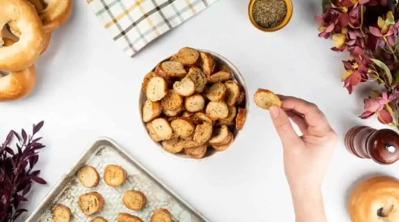

Oven Baked Bagel Crisps

Description
A tasty snack without the potatos. Perfect for parties, lunchboxes and
more. Even works with stale bagels.
Ingredients
- Plain bagels
- Olive oil
- Black pepper
- Dried oregano
- Dried thyme
- Sea salt
Steps
Preheat the oven
- Preheat the oven to 160°C
Slicing the bagels
- Thinly slice the bagels, aiming for 20-25 slices per bagel
Oil and seasoning
-
In a large bowl, mix the olive oil, black pepper, dried oregano, and
dried thyme
-
Add the sliced bagel pieces to the bowl, ensuring a thorough coating.
Arranging and baking
-
Arrange the bagel slices in a lined baking tray. Ensure they are not
overlapping
-
Place the tray in the oven for 10 minutes until golden
brown
Flipping and additional baking
- Remove the tray from the oven and flip the bagel slices over
-
Return the tray to the oven for a further
3-5 minutes or until golden brown
Cooling and seasoning
-
Take the crisps out of the oven and allow them to cool slightly on the
tray before transferring them to a dish or bowl
- Sprinkle sea salt, to taste, over the crisps and serve